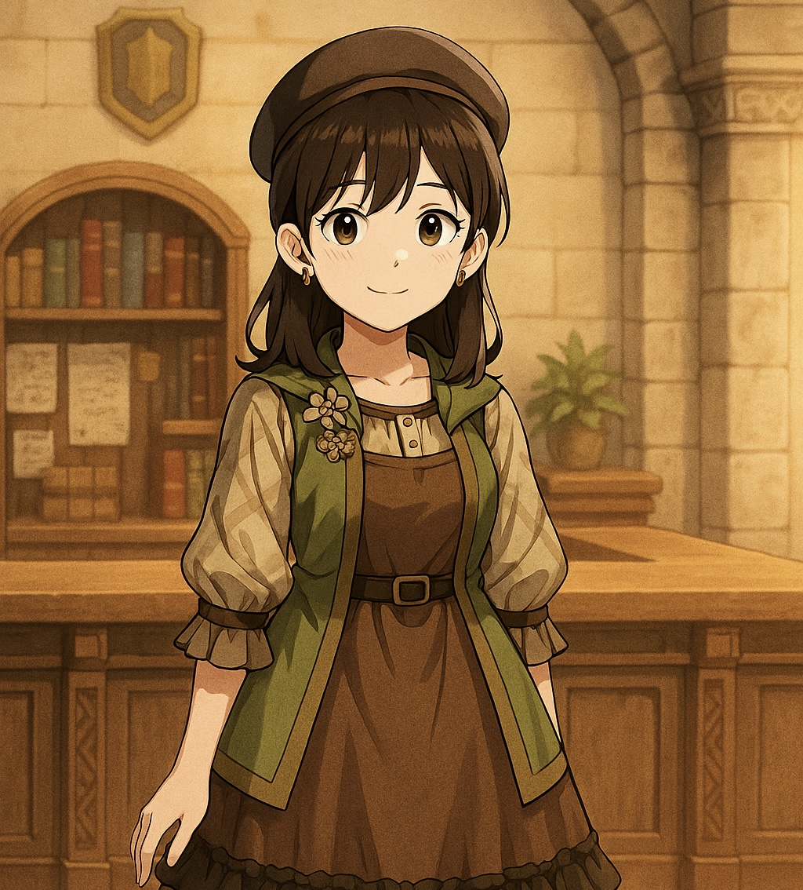

へっちゃらんどとは？
冒険的な生き方を求める人々が集い、即興・共創・物語を通じて
互いに刺激しあいながら変容していくコミュニティです。
私たちは、非認知能力（目標に向かって粘り強く取り組む力、他者と協力する力など）を育む手法として「インプロ（即興）」を探究・実践しています。「自分が変わる」「仲間と影響しあい」「社会に還元する」という成長のサイクルを大切に、心理的安全性の高い場で、誰もが主人公になれる冒険の旅を始めます。
冒険への参加方法
① コミュニティ「へっちゃらギルド」に参加する
探究の拠点となるオンラインコミュニティです（LINEオープンチャット）。まずはここから、冒険の第一歩を踏み出しましょう。最初の仲間を募集中です！
② 書籍『非認知能力を育む「即興の知恵」』を読む
私たちの活動の哲学やコンセプト、約30の実践クエストが記された「羅針盤」です。活動の全体像を掴むことができます。
購入はこちら（Amazon）
③ 実践クエスト（ワークショップ）に挑戦する
知識を実践に移し、スキルを磨くためのワークショップです。単発のものから継続コースまで、様々なプログラムを準備中です。（近日公開！）
④ 法人向け研修プログラムを導入する
心理的安全性や共創文化を育む体験型研修を提供しています。「冒険の種（1h〜）」「気づきの地図（半日〜）」「変容の旅路（継続型）」など、ニーズに合わせたプランをご提案します。
私たちの哲学「へっちゃらインプロ」
スタンス：巨人の肩の上に立つ
インプロの三大源流（キース・ジョンストン、ヴィオラ・スポーリン、デル・クローズ）を統合し、現代的にアップデートした実践を探究します。
コンセプトとモデル：冒険の地図
学びのモデルを用いて、成長を可視化します。現在地と目的地を把握し、自分だけの冒険の地図を描きましょう。
へっちゃらマインド
「なんとかなる」と信じ、ドキドキしながらも一歩を踏み出す冒険的な姿勢。失敗さえも学びと楽しみに変えるマインドです。
運営メンバー
ギルドマスター：へちゃっぷりん
世界観の設計者であり、インプロの実践家。冒険者たちを新たな境地へと導く。
ギルドの名物受付嬢：おかまゆ
共創的な場づくりとコミュニティ運営の専門家。冒険者たちの出会いと交流を支える。
伝書鳩（お問い合わせ）
公演や研修のご依頼、コミュニティへの参加希望など、お気軽にご連絡ください。
info@heccharaland.example.com